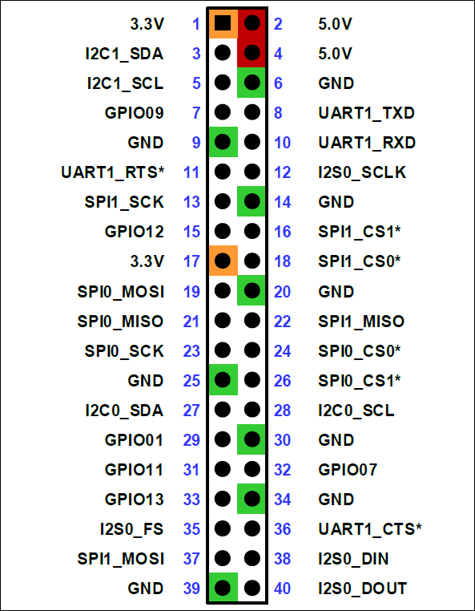

📦 Introduction to NVIDIA Jetson¶
Author: Dr. Kaikai Liu, Ph.D.
Position: Associate Professor, Computer Engineering
Institution: San Jose State University
Contact: kaikai.liu@sjsu.edu
🔍 What is NVIDIA Jetson?¶
🧭 Overview of NVIDIA Jetson¶
NVIDIA Jetson is a series of small, powerful computers (system-on-modules and developer kits) designed for edge AI, robotics, and embedded systems. It brings the power of NVIDIA’s GPU architecture to low-power, compact platforms, enabling real-time computer vision, deep learning inference, and autonomous decision-making on devices deployed outside the data center. - Launched: 2014, starting with the Jetson TK1. - Key Purpose: To bring GPU-accelerated computing to embedded and edge devices for applications such as robotics, drones, autonomous vehicles, and AI at the edge.
📜 Historical Evolution of NVIDIA Jetson¶
| Release Date | Product | Highlights |
|---|---|---|
| Mar 2014 | Jetson TK1 | First Jetson board; Tegra K1 chip with Kepler GPU. |
| Nov 2015 | Jetson TX1 | Introduced Maxwell GPU and enhanced CUDA support. |
| Mar 2017 | Jetson TX2 | Pascal GPU; improved efficiency and performance. |
| Sep 2018 | Jetson AGX Xavier | Volta GPU with Tensor Cores (~32 TOPS); industrial-grade AI. |
| Mar 2019 | Jetson Nano Developer Kit | Affordable AI platform (~0.5 TOPS), ideal for education and prototyping. |
| May 2020 | Jetson Xavier NX | Volta GPU (~21 TOPS); compact and powerful for edge applications. |
| Apr 2022 | Jetson AGX Orin Developer Kit | Ampere GPU (~275 TOPS); debuted in MLPerf benchmarks. |
| Dec 2022 | Jetson AGX Orin Production Module (32 GB) | Production version began shipping. |
| Sep 2022 | Jetson Orin Nano Developer Kit | Entry-level Orin (~40 TOPS) announced at GTC. |
| Dec 17, 2024 | Jetson Orin Nano Super Dev Kit | Enhanced Orin Nano with 67 INT8 TOPS (1.7× generative AI boost). |
NVIDIA Unveils Its Most Affordable Generative AI Supercomputer The new NVIDIA Jetson Orin Nano Super Developer Kit, which fits in the palm of a hand, provides everyone from commercial AI developers to hobbyists and students, gains in generative AI capabilities and performance. And the price is now $249, down from $499. It delivers as much as a 1.7x leap in generative AI inference performance, a 70% increase in performance to 67 INT8 TOPS, and a 50% increase in memory bandwidth to 102GB/s compared with its predecessor. Introduction Video
🔗 Relation to Other NVIDIA Platforms¶
| Platform | Chipset | Use Case |
|---|---|---|
| Jetson Nano | Maxwell | Entry-level AI and CV |
| Jetson Xavier NX | Volta | Intermediate robotics, drones |
| Jetson Orin Nano | Ampere | Education, AI, edge compute |
| NVIDIA DRIVE AGX | Orin | Autonomous driving compute |
| Switch 2 (rumor) | Custom Orin | High-performance gaming console |
- The Orin family spans from Jetson to automotive and even rumored consumer devices like the Nintendo Switch 2.
- Jetson Orin Nano shares architectural DNA with NVIDIA DRIVE Orin, used in autonomous vehicles.
⚖️ Performance Comparison with Other Platforms¶
| Device/Chipset | AI Throughput (TOPS) | Power (W) | Notes |
|---|---|---|---|
| Jetson Orin Nano (8GB) | \~40 TOPS | 15W | Optimized for edge AI and inference |
| Apple M2 | \~15 TOPS (NPU est.) | 20W–30W | General-purpose SoC with ML acceleration |
| Intel Core i7 (12th Gen) | \~1–2 TOPS (CPU only) | 45W+ | High compute, poor AI power efficiency |
| Raspberry Pi 5 | <0.5 TOPS | 5–7W | General ARM SBC, no dedicated AI engine |
- Jetson Orin Nano provides a highly efficient balance of AI compute and power usage, ideal for on-device inference.
- It outperforms embedded CPUs and SBCs while being more power-efficient than traditional desktops.
📦 Jetson Modules and Their GPU Architecture¶
Jetson modules use cut-down versions of NVIDIA’s main GPU architectures (Kepler, Maxwell, Pascal, Volta, Ampere, and now Blackwell) that are optimized for power efficiency, thermal limits, and edge deployment.
| Jetson Module | GPU Architecture | Related Desktop GPU Series |
|---|---|---|
| Jetson TK1 | Kepler | GTX 600 / 700 Series |
| Jetson TX1 | Maxwell | GTX 900 Series |
| Jetson TX2 | Pascal | GTX 10 Series |
| Jetson AGX Xavier | Volta | Tesla V100-class (with Tensor Cores) |
| Jetson Orin Series | Ampere | RTX 30 Series / A100-class |
| (Future) Jetson Blackwell | Blackwell (Expected) | RTX 50 / B100-class GPUs |
Jetson shares the CUDA, cuDNN, TensorRT, and DeepStream SDK software stacks with desktop and server-class GPUs, allowing AI/vision models developed in the cloud or lab to scale down for embedded inference.
The Jetson Orin Nano brings the powerful Ampere architecture to embedded AI platforms. With Ampere’s Tensor Cores and optimized power/performance, Jetson Orin Nano can run modern transformers, YOLOv8, and vision-language models—right on the edge. - GPU: 512-core Ampere GPU with 16 Tensor Cores - AI Performance: Up to 40 TOPS (INT8), or 67 TOPS on the Orin Nano Super - CPU: 6-core ARM Cortex-A78AE - Memory: 4GB or 8GB LPDDR5 - Target Use Cases: Robotics, smart cameras, low-power edge AI
⚙️ Architecture Comparison: Desktop / Data Center¶
| Architecture | GPUs / Chips | Precision Support | Tensor Core Gen | Memory Bandwidth | Notes |
|---|---|---|---|---|---|
| Kepler | GTX 600 / Jetson TK1 | FP32 | N/A | ~192 GB/s | First unified memory |
| Maxwell | GTX 900 / Jetson TX1 | FP32 | N/A | ~200 GB/s | Energy efficiency focus |
| Pascal | GTX 10 / Jetson TX2 | FP32, FP16 | None | ~300 GB/s | Deep learning training begins |
| Volta | Tesla V100 / Xavier | FP32, FP16, INT8 | 1st Gen | ~900 GB/s (HBM2) | Introduced Tensor Cores |
| Ampere | RTX 30xx / A100 / Orin | FP32, FP16, TF32, INT8 | 3rd Gen | 1.5 TB/s (A100), 204 GB/s (Orin) | TF32 and structured sparsity |
| Ada Lovelace | RTX 40xx | FP8, FP16, INT8 | 4th Gen | ~1 TB/s | Optimized for raster + transformer |
| Blackwell | RTX 50xx, B100, GB200 | FP8, TF32, INT4 | 5th Gen | 1.8–3.0 TB/s (HBM3E) | AI fusion, FP8/INT4 LLM inference |
🧠 Introduction to GPU Architecture¶
A Graphics Processing Unit (GPU) is a parallel processor optimized for data-parallel throughput computing. Unlike CPUs which have a handful of powerful cores optimized for control flow and single-threaded performance, GPUs feature many simpler cores that execute instructions on SIMD or SIMT (Single Instruction, Multiple Threads) principles—ideal for vectorizable and matrix-heavy workloads like:
- Deep neural network inference
- Image and signal processing
- Linear algebra (matrix multiplication, convolutions)
- Physics and fluid dynamics simulations
A GPU is composed of several Streaming Multiprocessors (SMs), each containing:
- CUDA Cores: Scalar ALUs for FP32/INT32 operations
- Tensor Cores: Fused multiply-accumulate (FMA) engines for low-precision matrix ops (e.g., FP16/INT8/INT4)
- Warp Scheduler: Dispatches 32-thread warps to available execution units
- Register Files & Shared Memory: On-chip fast memory for intra-thread block communication
- Special Function Units: For transcendental math like sin, cos, exp, rsqrt
GPUs are designed with a non-uniform memory hierarchy to balance throughput and latency:
- Global Memory (DRAM): High-latency, high-bandwidth (e.g., LPDDR5 on Jetson, HBM on data center GPUs)
- Shared Memory / L1 Cache: Low-latency memory within SMs for intra-thread block comms
- L2 Cache: Shared across SMs; allows memory coalescing
- Texture/Constant Memory: Specialized caches for spatial or read-only access
Bandwidth is often the bottleneck in GPU computing, not ALU count. Efficient memory coalescing and reuse (e.g., tiling, blocking) are key to performance.
NVIDIA GPUs follow a SIMT (Single Instruction, Multiple Threads) model:
- Threads are grouped into warps (32 threads)
- Each warp executes the same instruction path; divergence (e.g.,
ifbranches) leads to warp serialization - Multiple warps and thread blocks are scheduled per SM
Execution granularity is fine-tuned through occupancy: the ratio of active warps to maximum supported warps on an SM.
The Streaming Multiprocessor (SM) is the fundamental hardware unit in NVIDIA GPUs responsible for executing parallel instructions. It encapsulates the resources necessary to support thousands of concurrent threads, and its microarchitecture directly determines latency hiding, throughput, and occupancy. Each GPU consists of multiple SMs (e.g., 16–128+), and each SM contains:
| Component | Description |
|---|---|
| CUDA Cores (ALUs) | Scalar processors for FP32, INT32, and logical ops |
| Tensor Cores | Matrix-multiply–accumulate units for FP16, BF16, INT8, and sparsity-optimized operations |
| Warp Scheduler | Dispatches one or more warps per cycle to execution pipelines |
| Instruction Dispatch Units | Decodes and routes instructions to functional units |
| Shared Memory / L1 Cache | Programmable, low-latency memory for inter-thread communication |
| Register File | Stores private per-thread variables (e.g., 64K registers per SM) |
| Special Function Units (SFUs) | Handles transcendental math like exp, sin, rsqrt |
| Load/Store Units | Handles memory transactions to/from global/local memory |
Each SM contains Tensor Cores—specialized FMA (fused multiply-accumulate) units capable of processing small matrices at very high throughput.
- Operate on 4×4 or 8×8 matrices internally.
- Support mixed-precision input/output (FP16, INT8, FP8, TF32).
- Enable high-throughput operations for convolutions, transformers, and matrix multiplications.
Example: On Jetson Orin Nano (Ampere): - Each SM has 1 Tensor Core - Each Tensor Core processes 64 FP16 or 128 INT8 FMA ops per cycle - With 16 SMs × 128 INT8 ops, theoretical peak = ~32K ops/cycle
Each SM has a large register file (e.g., 64 KB per SM) and shared memory / L1 cache (up to 128 KB depending on configuration).
- Registers are used for fast local thread variables.
- Shared memory is explicitly managed by the programmer and ideal for:
- Tiled matrix multiplication
- Reductions
- Communication across threads in a block
Proper register allocation and shared memory usage are critical for occupancy—too many registers per thread can limit the number of resident warps.
Example: SM Configuration on Jetson Orin Nano
| Feature | Value |
|---|---|
| SMs | 16 |
| CUDA Cores per SM | 32 |
| Tensor Cores per SM | 1 |
| Total CUDA Cores | 512 |
| Warp Schedulers per SM | 1 |
| Registers per SM | 64K |
| Shared Memory per SM | 64–128 KB |
| FP16/INT8 Tensor Ops | Accelerated by dedicated tensor units |
| Max Warps per SM | 64 |
| Max Threads per SM | 2048 |
📦 Execution Granularity: Threads, Warps, and Thread Blocks¶
A single SM can hold multiple warps from multiple thread blocks. The GPU scheduler dynamically switches between warps to hide memory and instruction latency. - Thread: Basic unit of execution; executes the kernel’s code independently. - Warp: Group of 32 threads executed in SIMT fashion (Single Instruction, Multiple Threads). - Thread Block: Group of warps scheduled together and sharing resources like shared memory.
Example: When one warp stalls on a memory load, another ready warp is dispatched without pipeline stalls.
Each SM contains multiple warp schedulers (e.g., 4 in Ampere SMs), which issue instructions per cycle from active warps to the relevant execution pipelines. Warp scheduling is round-robin or greedy-then-oldest, depending on architecture. Execution Pipelines (Ampere example):
| Pipeline | Operations Handled |
|---|---|
| FP32 Units | Scalar arithmetic (add, mul) |
| INT Units | Integer math, bitwise logic |
| Tensor Cores | Fused matrix ops (e.g. D = A×B + C) |
| SFUs | sin, exp, log, sqrt, etc. |
| LD/ST Units | Memory read/write transactions |
| Branch Units | Handles divergence and predication |
Up to 4 instructions from different warps can be issued per cycle per SM, depending on available resources.
GPUs do not use traditional out-of-order execution. Instead, they rely on:
- Thread-level parallelism (TLP): Multiple warps in-flight per SM
- Warp-level parallelism (WLP): Warp interleaving masks memory/instruction latency
Occupancy = (Active warps per SM) / (Maximum warps per SM)
- Higher occupancy helps hide memory latency
- Too high occupancy can lead to register pressure or shared memory contention
🔹 NVIDIA's official software stack for Jetson¶
NVIDIA's official software stack for Jetson, includes:
- Ubuntu 20.04
- CUDA Toolkit
- cuDNN (Deep Neural Network library)
- TensorRT (optimized inference engine)
- OpenCV and multimedia APIs
🚀 CUDA, cuDNN, TensorRT Comparison and Modern GPU Architectures: - 🔹 CUDA (Compute Unified Device Architecture): Parallel computing platform and programming model that allows developers to harness the power of NVIDIA GPUs for general-purpose computing. - 🔹 TensorRT: High-performance deep learning inference optimizer and runtime engine. Used to accelerate models exported from PyTorch or ONNX. - 🔹 cuDNN: CUDA Deep Neural Network library: provides optimized implementations of operations such as convolution, pooling, and activation for deep learning.
📦 Layered Abstraction for GPU AI Inference
| Layer | Tool | Purpose |
|---|---|---|
| High-Level | TensorRT | Optimized deployment, quantization, engine runtime |
| Mid-Level | cuDNN | Primitives for DL ops (Conv, Pool, RNN, etc.) |
| Low-Level | CUDA | General GPU programming with warp/thread/memory control |
⚙️ Jetson Orin Nano Super Developer Kit¶

Module Specifications¶
The Jetson Orin Nano 8GB Module features: - Architecture: NVIDIA Ampere with 1024 CUDA cores and 32 tensor cores - AI Performance: Up to 67 INT8 TOPS - Memory: 8GB 128-bit LPDDR5 (102GB/s memory bandwidth) - CPU: 6-core Arm® Cortex®-A78AE v8.2 64-bit (1.7GHz) with 1.5MB L2 + 4MB L3 - Power Range: 7W–25W
You can flash the base L4T BSP using SDK Manager on any of these storage media: - SD card slot (1) - External NVMe (2280-size on slot 10, 2230-size on slot 11) - USB drive on any USB port (4 or 6)
| Feature | Value |
|---|---|
| Model | Jetson Orin Nano |
| Form Factor | 69.6mm × 45mm |
| JetPack SDK | Ubuntu 20.04 + CUDA, cuDNN, TensorRT |
| IO Support | GPIO, I2C, SPI, UART, MIPI CSI |
| Variants | 4GB RAM (5W) and 8GB RAM (7-15W) |
| Storage | microSD / M.2 NVMe SSD support |
Key Components of the Carrier Board¶
- Camera Connectors:
- 2× MIPI CSI-2 camera connectors (0.5mm pitch 22-pin flex connectors)
- Compatible with 15-pin connector (like Raspberry Pi Camera Module v2) using a 15-pin to 22-pin conversion cable
-
Supports: CAM0: CSI 1 ×2 lane, CAM1: CSI 1 ×2 lane or 1 ×4 lane
-
Storage Expansion:
- M.2 Key M slot with ×4 PCIe Gen3
- M.2 Key M slot with ×2 PCIe Gen3
-
M.2 Key E slot
-
USB Connectivity:
- 4× USB 3.2 Gen2 Type-A ports
-
USB Type-C port for UFP (cannot output display signal)
- Host mode: Functions as downstream-facing port (DFP), like the Type-A ports
- Device mode: Connects to PC as USB Mass Storage, Serial, and Ethernet (RNDIS) device (Jetson IP: 192.168.55.1)
- Recovery mode: Used for flashing Jetson from PC
-
Other Interfaces:
- Gigabit Ethernet port
- DisplayPort: 1× DP 1.2 (+MST) connector
- 40-pin expansion header (UART, SPI, I2S, I2C, GPIO)
- 12-pin button header and 4-pin fan header
-
DC power jack for 19V power input
-
Dimensions: 103mm × 90.5mm × 34.77mm
Carrier Board Connectors¶
| Mark. | Name | Note |
|---|---|---|
| 1 | microSD card slot | |
| 2 | 40-pin Expansion Header | |
| 3 | Power Indicator LED | |
| 4 | USB-C port | For data only |
| 5 | Gigabit Ethernet Port | |
| 6 | USB 3.2 Gen2 Type-A ports (×4) | 10Gbps |
| 7 | DisplayPort Output Connector | |
| 8 | DC Power Jack | 5.5mm x 2.5mm |
| 9 | MIPI CSI Camera Connectors (x2) | 22pin, 0.5mm pitch |
| 10 | M.2 Slot (Key-M, Type 2280) | PCIe 3.0 x4 |
| 11 | M.2 Slot (Key-M, Type 2230) | PCIe 3.0 x2 |
| 12 | M.2 Slot (Key-E, Type 2230) (populated) |
40-pin Expansion Header¶

References¶
- Jetson Orin Nano Developer Kit User Guide - Hardware Specs
- Jetson Datasheet
- Jetson Orin Nano Developer Kit User Guide - Software Setup
- Jetson Orin Nano Developer Kit Getting Started Guide
- Jetson Orin Nano Developer Kit Carrier Board Specification
- Jetson Orin Nano Initial Setup using SDK Manager
🧪 First Boot on SSD¶
- Connect Jetson to the Monitor:
- If still plugged, remove the jumper from header (that was used to put it in Forced Recovery mode)
- Connect the DisplayPort cable or adapter and USB keyboard and mouse to Jetson Orin Nano Developer Kit, or hook up the USB to TTL Serial cable.
- Unplug the power supply and put back in to power cycle.
-
Jetson should now boot into the Jetson Linux (BSP) of your selected JetPack version from the storage of your choice.
-
Power up Jetson — it will boot from SSD automatically.
-
Complete initial Ubuntu setup wizard (username, password, time zone).
-
Optional: Verify SSD is rootfs:
df -h / # Output should show something like: /dev/nvme0n1p1 #Identify your NVMe SSD sjsujetson@sjsujetson-01:~$ lsblk -
Optional: Check JetPack version
It shows L4T 36.4.3, which corresponds to JetPack 6.2 Official mapping reference. JetPack 6.2 is the latest production release of JetPack 6. This release includes Jetson Linux 36.4.3, featuring the Linux Kernel 5.15 and an Ubuntu 22.04-based root file system. The Jetson AI stack packaged with JetPack 6.2 includes CUDA 12.6, TensorRT 10.3, cuDNN 9.3, VPI 3.2, DLA 3.1, and DLFW 24.0.sjsujetson@sjsujetson-01:~$ dpkg-query --show nvidia-l4t-core nvidia-l4t-core 36.4.3-20250107174145 sjsujetson@sjsujetson-01:~$ dpkg -l | grep nvidia*
🧪 Jetson Development Workflow in SJSU¶
We have prepared a master Jetson image preloaded with the latest JetPack 6.2, NVIDIA Container Toolkit (Docker support), and all essential runtime and development components that typically require elevated privileges. This includes CUDA, cuDNN, TensorRT, DeepStream, and necessary drivers.
Students can simply SSH into their assigned Jetson device and begin testing functionality, running containerized applications, or developing their own AI/robotics projects—without needing to configure the system themselves or worry about low-level device setup. This streamlined environment is ideal for focusing on learning and experimentation rather than system administration.
✅ No sudo access required.
✅ Pre-installed JetPack, Docker, and AI libraries.
✅ Access Jetson remotely via .local hostname or static IP.
✅ Custom designed sjsujetsontool to update, launch shell/JupyterLab, run Python scripts, llm models, and monitor system.
🔌 Jetson Orin Nano Hardware Deep Dive¶
🏗️ System-on-Module (SOM) Architecture¶
The Jetson Orin Nano consists of two main components: 1. Jetson Orin Nano Module - The compute module containing CPU, GPU, memory 2. Developer Kit Carrier Board - Provides I/O, power, and expansion interfaces
Module Specifications:¶
┌─────────────────────────────────────────────────────────┐
│ Jetson Orin Nano Module │
│ ┌─────────────┐ ┌──────────────┐ ┌─────────────────┐ │
│ │ 6-core │ │ 512-core │ │ 8GB LPDDR5 │ │
│ │ Cortex-A78AE│ │ Ampere GPU │ │ 102 GB/s BW │ │
│ │ @ 1.7GHz │ │ 16 Tensor │ │ │ │
│ │ │ │ Cores │ │ │ │
│ └─────────────┘ └──────────────┘ └─────────────────┘ │
│ │
│ ┌─────────────────────────────────────────────────────┐ │
│ │ Tegra Orin SoC │ │
│ │ • Video Encoders: 2x 4K30 H.264/H.265 │ │
│ │ • Video Decoders: 2x 4K60 H.264/H.265 │ │
│ │ • ISP: 2x 12MP cameras │ │
│ │ • PCIe: 3.0 x8 + 3.0 x4 │ │
│ │ • USB: 4x USB 3.2 Gen2 │ │
│ └─────────────────────────────────────────────────────┘ │
└─────────────────────────────────────────────────────────┘
🔌 Comprehensive Connector Analysis¶
Power System¶
- DC Jack (19V): Primary power input, 5.5mm x 2.5mm barrel connector
- Power Modes:
- 5W Mode: CPU @ 1.2GHz, GPU @ 510MHz (fanless operation)
- 15W Mode: CPU @ 1.7GHz, GPU @ 918MHz (active cooling)
- 25W Mode: Maximum performance (requires adequate cooling)
# Check current power mode
sudo nvpmodel -q
# Set to maximum performance
sudo nvpmodel -m 0
# Set to power-efficient mode
sudo nvpmodel -m 1
Display and Video¶
- DisplayPort 1.2: Supports up to 4K@60Hz with Multi-Stream Transport (MST)
- Video Encoding: 2x 4K30 H.264/H.265 hardware encoders
- Video Decoding: 2x 4K60 H.264/H.265 hardware decoders
Camera Interfaces (MIPI CSI-2)¶
Camera Connector Pinout (22-pin, 0.5mm pitch):
┌─────────────────────────────────────────┐
│ Pin │ Signal │ Pin │ Signal │
├─────┼───────────┼─────┼─────────────────┤
│ 1 │ GND │ 12 │ CSI_D1_N │
│ 2 │ CSI_CLK_P │ 13 │ GND │
│ 3 │ CSI_CLK_N │ 14 │ CSI_D0_P │
│ 4 │ GND │ 15 │ CSI_D0_N │
│ 5 │ CSI_D3_P │ 16 │ GND │
│ 6 │ CSI_D3_N │ 17 │ CAM_I2C_SCL │
│ 7 │ GND │ 18 │ CAM_I2C_SDA │
│ 8 │ CSI_D2_P │ 19 │ GND │
│ 9 │ CSI_D2_N │ 20 │ CAM_PWDN │
│ 10 │ GND │ 21 │ CAM_RST_N │
│ 11 │ CSI_D1_P │ 22 │ +3.3V │
└─────┴───────────┴─────┴─────────────────┘
Supported Camera Configurations: - CAM0: 1x2 lane or 1x4 lane MIPI CSI-2 - CAM1: 1x2 lane MIPI CSI-2 - Maximum Resolution: 12MP per camera - Compatible Cameras: IMX219, IMX477, OV5693, and many others
Storage Expansion (M.2 Slots)¶
M.2 Key-M Slot (2280 size) - PCIe 3.0 x4: - Use Cases: High-performance NVMe SSDs - Max Speed: ~3.5 GB/s sequential read - Recommended: Samsung 980, WD SN570, Crucial P3
M.2 Key-M Slot (2230 size) - PCIe 3.0 x2: - Use Cases: Compact SSDs, additional storage - Max Speed: ~1.7 GB/s sequential read
M.2 Key-E Slot (2230 size) - PCIe 3.0 x1 + USB 2.0: - Use Cases: WiFi/Bluetooth modules, cellular modems - Pre-populated: Intel AX201 WiFi 6 + Bluetooth 5.2 - Alternatives: Quectel EM05-G (4G LTE), Sierra Wireless modules
🔧 40-Pin GPIO Expansion Header¶
The 40-pin header provides extensive I/O capabilities compatible with Raspberry Pi HATs:
3.3V (1) (2) 5V
GPIO2/SDA (3) (4) 5V
GPIO3/SCL (5) (6) GND
GPIO4 (7) (8) GPIO14/TXD
GND (9) (10) GPIO15/RXD
GPIO17 (11) (12) GPIO18/PWM
GPIO27 (13) (14) GND
GPIO22 (15) (16) GPIO23
3.3V (17) (18) GPIO24
GPIO10/MOSI(19) (20) GND
GPIO9/MISO (21) (22) GPIO25
GPIO11/SCLK(23) (24) GPIO8/CE0
GND (25) (26) GPIO7/CE1
ID_SD (27) (28) ID_SC
GPIO5 (29) (30) GND
GPIO6 (31) (32) GPIO12/PWM
GPIO13 (33) (34) GND
GPIO19 (35) (36) GPIO16
GPIO26 (37) (38) GPIO20
GND (39) (40) GPIO21
Available Interfaces:¶
- I2C: 2 channels (I2C-1: pins 3,5; I2C-0: pins 27,28)
- SPI: 2 channels (SPI0: pins 19,21,23,24,26; SPI1: pins 12,35,38,40)
- UART: 1 channel (pins 8,10)
- PWM: 4 channels (pins 12,32,33,35)
- GPIO: 26 digital I/O pins
- Power: 3.3V, 5V, and multiple GND pins